Writer Journal introduces 2 types of local data backup mechanisms. Namely Manual backup and Auto backup, you can either backup your documents manually or setup an auto backup schedule to let Writer Journal backup your data periodically.
Google drive sync feature has been requested many times, we are working hard to implement this feature and hopefully will be available in some future release!
Manual backup
Please follow the following steps to backup your documents and export it as a single .wjb backup file.(See the screenshots)
Navigate to Data backup page
Under the manual backup tab, click Backup to start the backup procedure
Select your destination folder and give your backup file a name and click Save button
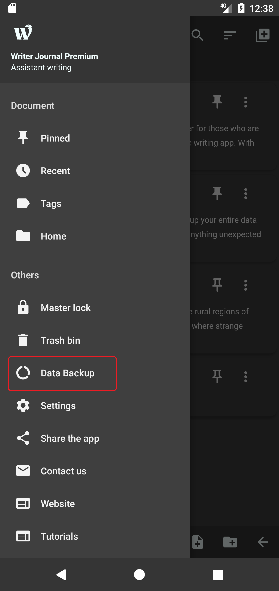
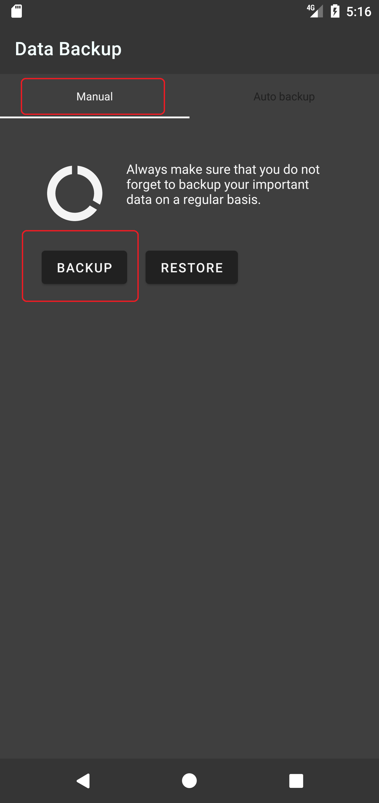
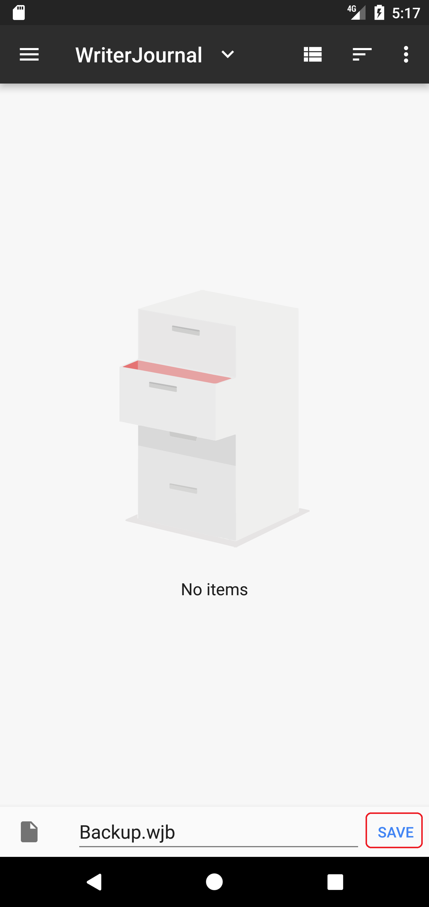
Note that you can also choose Google drive folder to save the backup file directly to your Google drive account. This way you can also restore it from another device very easily. (See the screenshots)
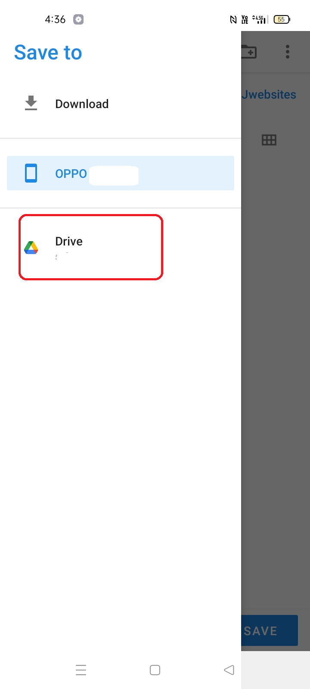
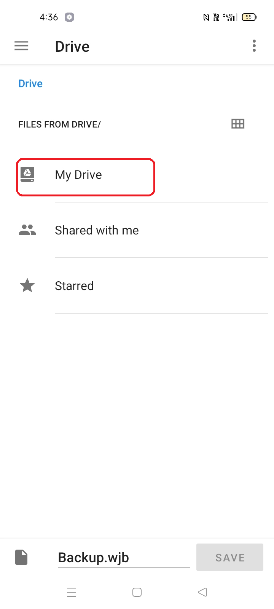
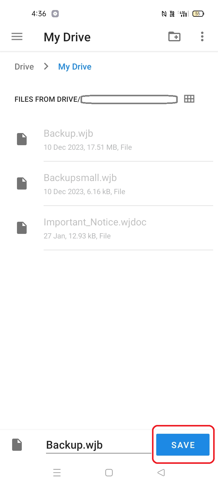
Manual restore
Please follow the steps below to manually restore your exported backup.
Go to Data backup page
Click restore button under Manual tab
Click OK to start selecting your backup file
Select your backup .wjb file and wait until Writer Journal restore your data
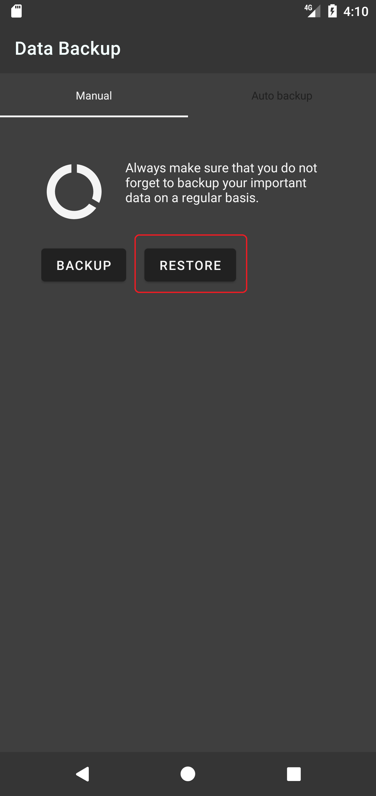
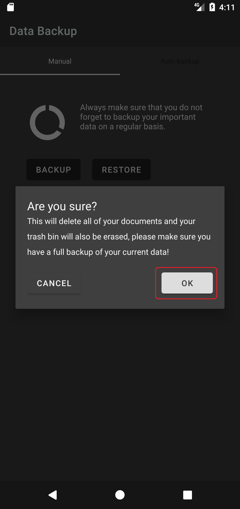
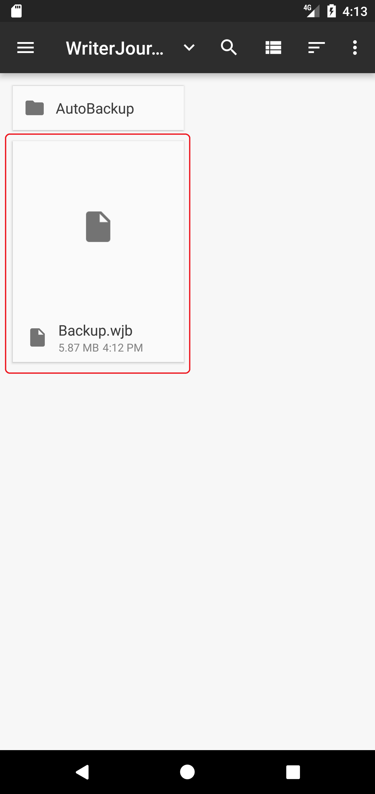
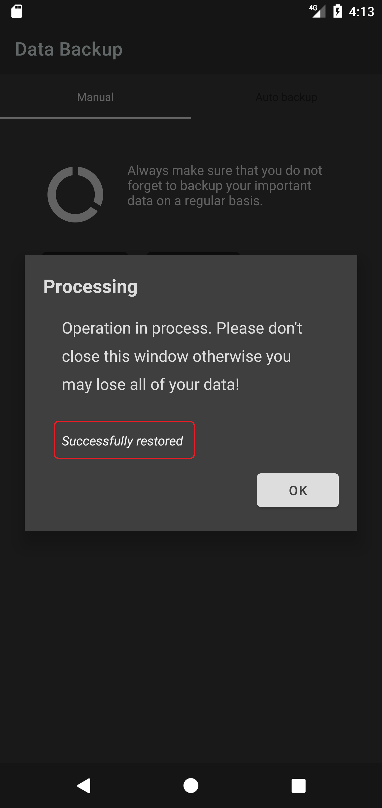
Auto backup & restore
Please follow the following steps to setup an auto backup schedule. (See the screenshots)
Navigate to Settings page
Click Home folder if you haven't yet specified a home folder for Writer Journal
Select a folder for Writer Journal to use as a home folder, your auto backup files will be stored there, these files will not get deleted even if you accidentally deleted the app
Now still in Settings page, click Auto backup and select an appropriate auto backup interval, I selected hourly
Congratulations, you have successfully setup an auto backup schedule
Navigate to Data backup page
Under the Auto backup tab, you will find your auto backup files appear there once it started to backup your documents. The first backup file will appear after an hour in this example
You can click restore button to restore all of your documents
Click OK to start the restore process
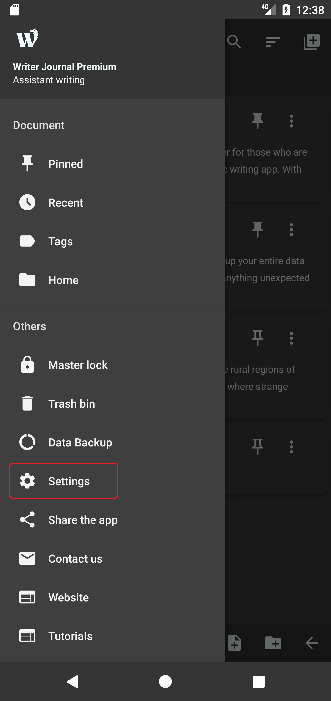
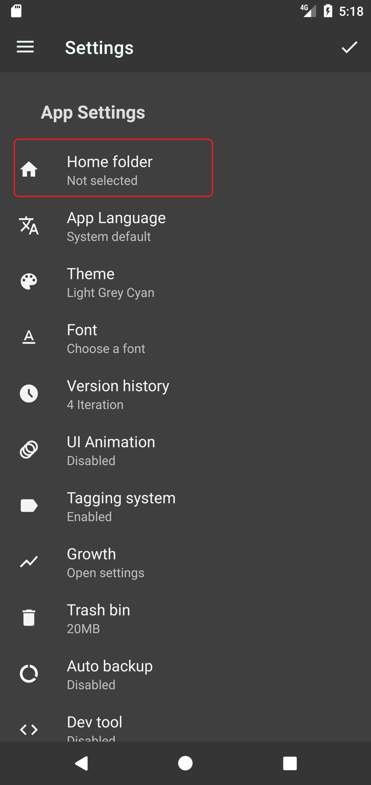
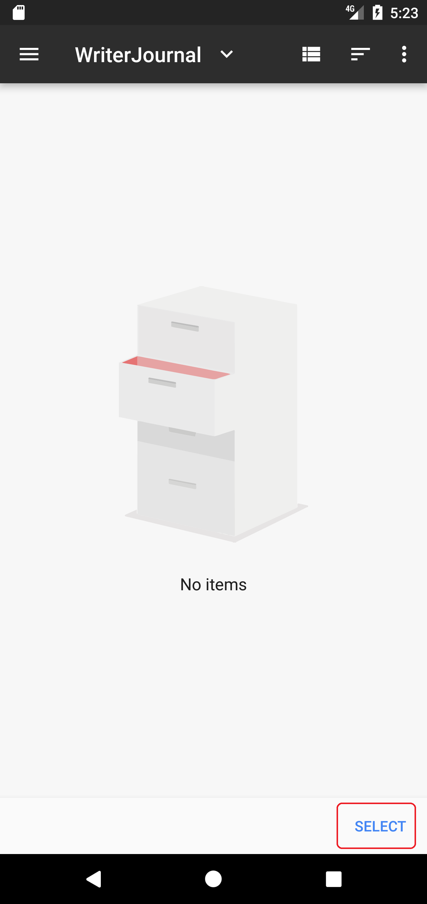
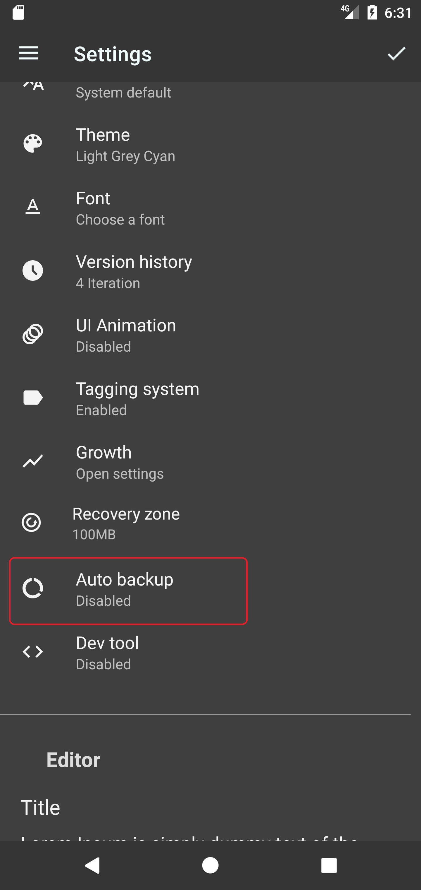
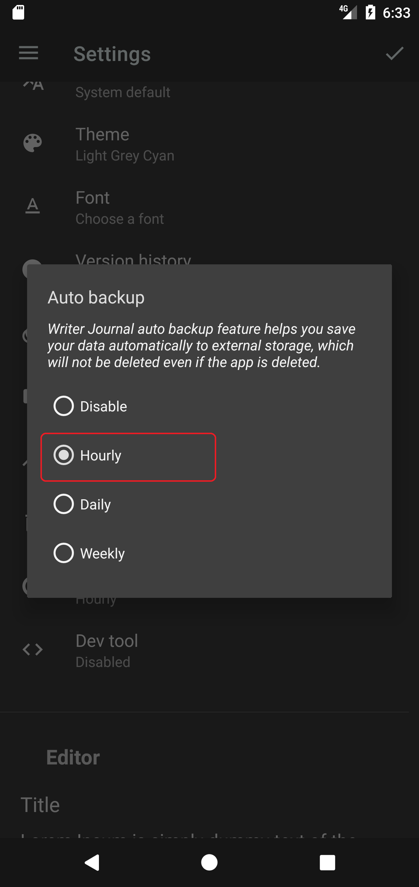
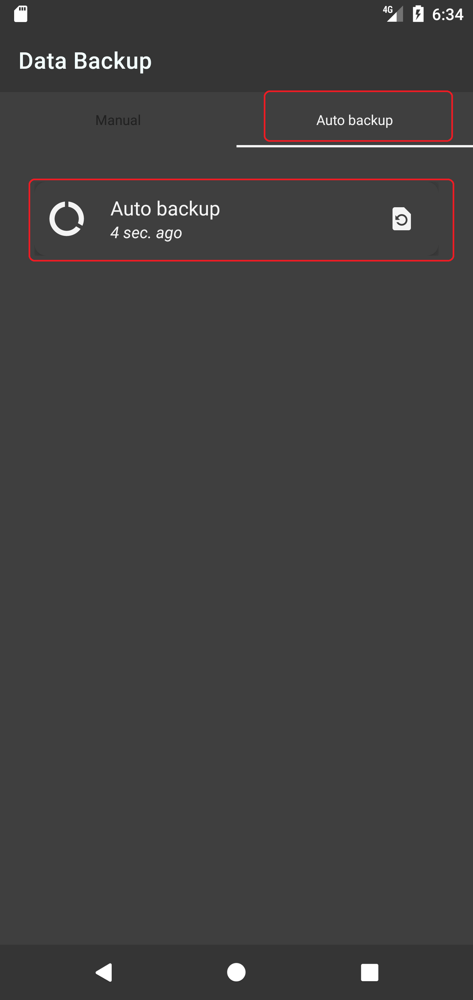
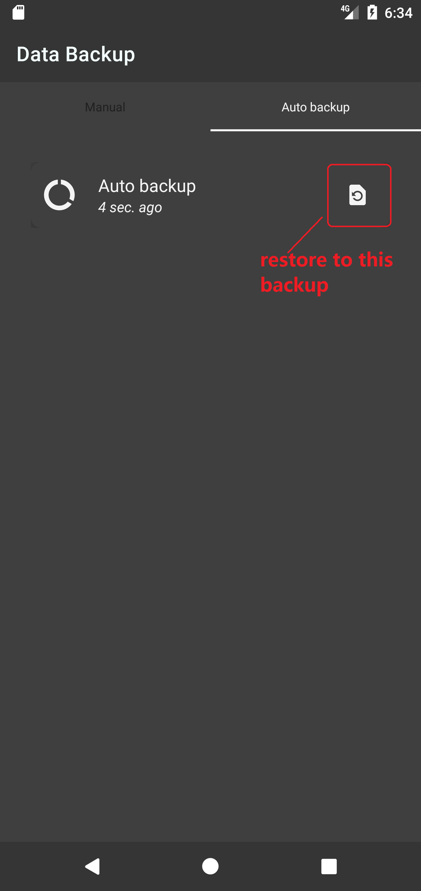
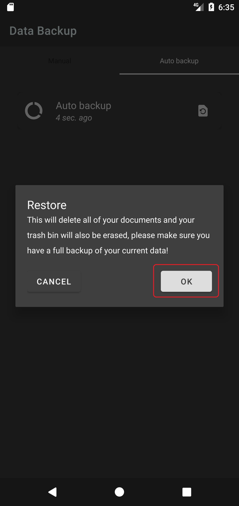
Warning ⚠️, restore will delete all of your current documents and folders, always make sure you have backup your data before any restore process.